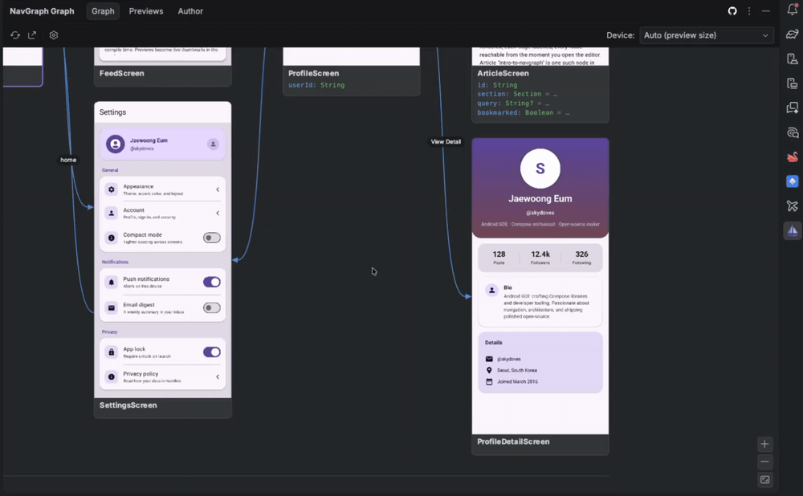
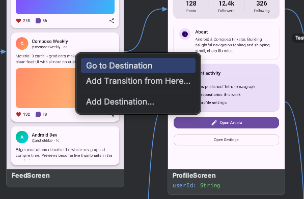

NavGraph Graph¶
The Graph tab of the NavGraph Graph tool window is the heart of the IDE plugin: a native, interactive canvas that draws your whole app's navigation as a flow map. Each node is a destination: its rendered thumbnail on top, its typed arguments listed UML style below, and curved arrows show the transitions between them. The start destination is emphasized with an accent border and a ★ glyph. (The tool window's other two tabs are the Preview Gallery and an author introduction.)

Merged Multi Module Graph¶
The tool window shows the whole app, not one module at a time. The graph is extracted per module by the Gradle plugin and merged into a single picture, so an edge declared in :feature-feed that points at a screen in :feature-profile is drawn across the module boundary just as it would happen at runtime.
If your repository holds more than one independent app (several :app-like roots), each is loaded as its own selectable scope. The tool window remembers your last selected scope per project, and falls back to the first one if a module was removed or renamed.
Thumbnails and Arguments¶
Every node that has a @NavPreview shows that preview's rendered thumbnail: the same Layoutlib render produced at build time, no device needed. Nodes also list the route class's serializable properties as typed argument rows, so you can see at a glance what data each destination expects. Both regions can be toggled off in settings if you want a denser, structure only layout.
Navigation: Double Click to Source¶
Double click any node to jump to its source: specifically, the composable marked with @NavDestination(route) for that route. This makes the graph a fast way to move around your codebase: find the screen you care about on the map, double click, and you're in the code.
Make it your own
Double click defaults to navigating to source. You can disable it under Settings if you'd rather use the canvas purely for visualization.
Add a Transition (Map → Code)¶
The graph isn't read only. You can author transitions from the canvas and the plugin writes the code for you. Hover a node to reveal a connector handle on its right edge, then press and drag it onto another node to create an edge between them. The plugin inserts a @NavEdge(to = …) into the source's Kotlin via PSI (idiomatic, correctly placed source you can review like any other edit), refreshes the graph, and draws the new arrow with its rendered thumbnails:

If you'd rather not drag, right click the canvas for the same Map → Code actions as a context menu:
- Add Transition from Here… on a node picks the target from a searchable list instead of the drag gesture.
- Wire This Up… appears on an orphan node (a route that's referenced but has no
@NavDestinationyet) and scaffolds its screen composable for you. - Add Destination… (on a node or on the empty canvas) asks for a name, then scaffolds a brand new route class plus its annotated screen.
- Go to Destination jumps to the node's source, same as a double click.

This closes the loop between the map and the code: sketch a flow visually, and your annotations stay the single source of truth.
Pan, Zoom, and Layout¶
The canvas supports the usual direct manipulation: drag to pan, wheel to zoom (or use the zoom buttons in the bottom right corner). The graph auto fits to the viewport on first load by default. Layout direction (left to right or top to bottom), node sizing, spacing, and edge curve style are all adjustable in settings.
Device Frame Selector¶
The Device combo in the toolbar reframes every node's thumbnail to a chosen device aspect ratio: Pixels, Galaxies, iPhones, iPads, and more, grouped by category. The default, Auto (preview size), keeps each thumbnail at its rendered preview's own size. Your pick also becomes the default framing for exports.
Export¶
The Export… toolbar action saves the graph as a standalone artifact without leaving the IDE: a single PNG image of the whole canvas, or an interactive HTML page you can pan, zoom, and filter in a browser. Under the hood it runs the Gradle exportNavGraphImage / exportNavGraphHtml tasks, framed for the selected device, and opens the result. For committed real-world examples of both, see nav-results/.

Refresh¶
The Refresh action reloads the graph. By default it re-runs the Gradle generateNavGraph task and then reloads the result, so a single click picks up source changes end to end. If you'd rather only reload the already generated files (and run Gradle yourself), switch Refresh to read existing mode in settings. Gradle failures surface in the IDE's Build tool window as usual.
Settings¶
Open the settings under Settings > Tools > NavGraph Graph (they're stored per project, in the workspace file, so they never pollute a shared .idea checkout). You can tune how edges and nodes are drawn, the layout direction and spacing, the theme, what Refresh and double click do, and the export defaults.
Every option, with its default and behavior, is documented on the dedicated Settings page.
Stale settings can't break the canvas
Settings persist as plain primitives, and any value that no longer maps to a known option (for example, after a rename) falls back to its default at render time, so an old workspace file can never crash the graph.